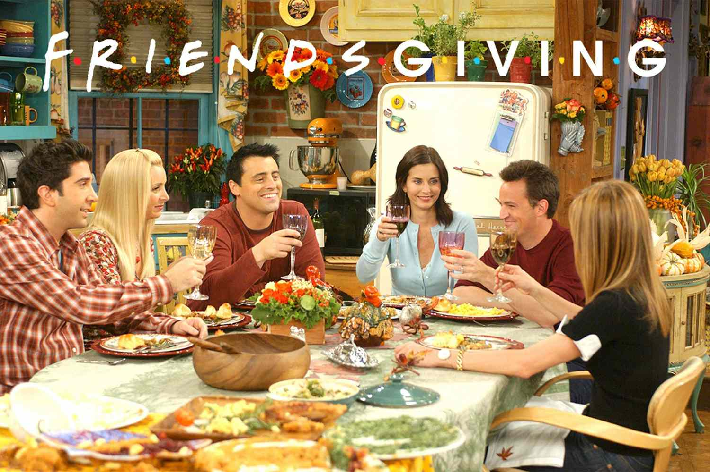
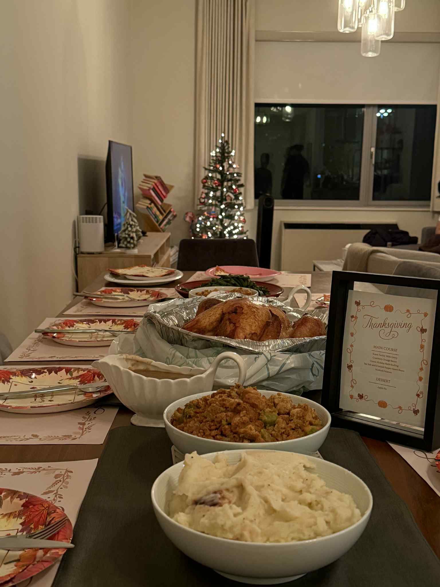

Introduction:
Friendsgiving has become one of the most meaningful parts of my year. As international students my friends and I do not always get to see each other often so this dinner has turned into one of the few moments when our whole high school group comes back together. It feels familiar and comforting and it gives us a space to slow down and reconnect. This year I wanted to host a dinner that felt cozy and thoughtful without overwhelming myself with planning. Instead of scrolling through endless recipes I decided to see if an LLM could help me plan the entire night. I wanted a simple menu a grocery list a prep timeline and small touches that would make the evening feel warm. It became a little experiment to see whether AI could actually make hosting easier and help me bring everyone together in a way that still feels personal.
Prompt:
I want you to help me plan a Friendsgiving dinner party. We are a group of international students who only see each other a few times a year so I want the night to feel warm personal and easy to host. Please create a complete realistic plan that includes the following: * A simple but impressive menu with two or three main dishes four or five sides one dessert and one drink idea. * Tell me which dishes I should cook myself and which ones I can ask guests to bring. * Create a grocery list organized by store section. * Give me a prep timeline for the day of Friendsgiving including what I should make ahead and what I can finish once guests arrive. * Suggest ideas for table setup music lighting and any small touches that help the space feel cozy and welcoming. * Keep everything practical budget friendly and manageable in a normal apartment kitchen.
Response:
Absolutely! Here is a complete, realistic, and festive Friendsgiving plan tailored for a group of international students who want a warm, personal, and easy-to-host gathering. Everything is designed to be cozy, affordable, and doable in a normal apartment kitchen.
🎉 PART 1: FRIENDSGIVING MENU
Simple, impressive, and suitable for sharing:
MAINS (2–3 Options): 1. Herb-Roasted Spatchcock Chicken – Moist, flavorful, and easier/faster than turkey. 2. Maple Dijon Glazed Salmon – Elegant, great for pescatarians. 3. Vegetarian Stuffed Acorn Squash – For vegetarian/vegan friends.
SIDES (Choose 4–5): 1. Classic Garlic Mashed Potatoes
2. Roasted Brussels Sprouts with Balsamic Glaze
3. Sweet Potato Casserole (with or without marshmallows)
4. Savory Stuffing with Mushrooms & Herbs (vegetarian)
5. Cranberry Orange Relish (make ahead, no cooking!)
DESSERT: • Pumpkin Pie Bars – Easier than pie, same cozy flavor, travel-friendly.
SIGNATURE DRINK: • Apple Cider Sangria (Alcoholic or Non-Alcoholic version available)
🍴 PART 2: WHO BRINGS WHAT
You Cook (Make-ahead friendly or easier to manage in your space): - Herb-Roasted Chicken - Sweet Potato Casserole - Cranberry Orange Relish - Apple Cider Sangria - Pumpkin Pie Bars
Ask Guests to Contribute (Simple transport & reheating): - Roasted Brussels Sprouts - Garlic Mashed Potatoes - Stuffing - Glazed Salmon (if someone likes to cook) - Vegetarian Stuffed Squash (great for guests with dietary restrictions)
👛 PART 3: GROCERY LIST (Organized by Store Section)
PRODUCE: - 2 lemons (chicken + sangria) - 2-3 apples (sangria + garnish) - 2 oranges (relish + sangria) - 6–8 yukon gold potatoes (mashed potatoes) - 2 sweet potatoes - 1–2 bunches fresh herbs (thyme, rosemary, parsley) - 1 bag cranberries (fresh or frozen) - 1 head garlic - 1 acorn squash - Brussels sprouts (if making yourself)
MEAT/FISH: - 1 whole chicken (spatchcock or ask butcher to butterfly) - Salmon filets (if you’re cooking)
DAIRY/EGGS: - Unsalted butter (1 lb) - Half & half or milk (mashed potatoes) - Eggs (2–3) - Cream cheese (for pumpkin bars)
DRY GOODS / PANTRY: - Brown sugar - Maple syrup - Dijon mustard - Olive oil - All-purpose flour - Sugar - Vanilla extract - Baking powder - Pumpkin puree (1 can) - Chicken or vegetable broth - Boxed stuffing mix (check for vegan/veg options) - Spices: cinnamon, nutmeg, sage, salt, pepper
BAKERY: - Crusty bread or rolls (optional)
BEVERAGES: - Apple cider (1–2 qt) - White wine (for sangria) - Sparkling water (for mocktail version)
OPTIONAL / EASY DÉCOR: - Tea lights, string lights - Paper napkins or autumn-themed paper plates - Mini pumpkins or autumn leaves
📆 PART 4: PREP TIMELINE FOR FRIENDSGIVING
2 DAYS BEFORE: - Grocery shop - Confirm who’s bringing what
1 DAY BEFORE: - Assemble/make: • Pumpkin Pie Bars (store chilled) • Cranberry Orange Relish (store in fridge) • Sweet Potato Casserole (assemble, refrigerate) • Sangria (mix and chill overnight for best flavor) • Spatchcock and marinate the chicken
DAY OF SCHEDULE:
9:00 AM - Set table/decorate - Clear counters and make kitchen guest ready
11:00 AM - Bake Sweet Potato Casserole (then reheat before serving) - Roast chicken (reheat 10–15 min before dinner if needed) - Set sangria out with citrus or apple garnish - Check guest dishes (send reminder!)
30 MIN BEFORE GUESTS ARRIVE: - Warm oven for reheating guest dishes - Light candles/lights - Set music
AS GUESTS ARRIVE: - Offer sangria and light snacks (store-bought nuts, olives, etc.) - Reheat what needs warming - Slice chicken/salmon, assemble dishes buffet-style or family-style - Keep dessert covered and coffee/tea ready for post-dinner
✨ PART 5: COZY VIBES: TABLE, MUSIC, LIGHTING, ATMOSPHERE
TABLE SETUP: - Use a clean tablecloth or neutral sheet - Place autumn leaves, candles, or mini pumpkins down the center - Set a few cloth or pretty paper napkins - Keep everything serve-yourself style to relax the vibe
LIGHTING: - Dim overhead lights - Add string lights, small lamps, and real or electric candles for glow
MUSIC: - Create/search Spotify playlist: “Autumn Dinner Vibes” or “Friendsgiving Chill” Genres: acoustic singer-songwriter, jazz, mellow global/instrumental
SMALL TOUCHES: - Print/place one card at each plate with a memory, inside joke, or “what I’m thankful for” message - Have a disposable camera or phone selfie area — collect memories
🧡 Summary
Everything in this plan keeps cost low, prep reasonable, kitchen demands light, and vibe personal and welcoming. Let the food be shared with love and don’t stress perfection—it’s about being together.
Happy Friendsgiving! Let me know if you’d like a printable version or customizations.
Reflection:

result!
Seeing the full plan the LLM created actually made me feel a lot more calm about hosting. It laid everything out in a way that felt organized and doable which is something I always appreciate when I am trying to plan a dinner that brings everyone together. I liked how it gave me a mix of simple dishes and a few that feel a little more special and it surprised me by being realistic about what I should cook myself and what guests could bring. That part honestly made things feel a lot less overwhelming.
At the same time I noticed that the LLM sometimes over planned in a very enthusiastic way. It gave me a whole timeline decor ideas and even music suggestions which was helpful but also a little funny because it felt like I was being coached by the world’s most eager co host. Still it did make me think of details I probably would have forgotten like lighting or having snacks ready as people walk in.
Overall I liked how complete the plan felt. It made me realize that hosting does not have to be stressful if I break everything down the way the model did. It also reminded me that Friendsgiving is really about the people in the room especially since my friends and I only get a few chances a year to all be together. If the food is good and the vibe is warm the rest will fall into place.